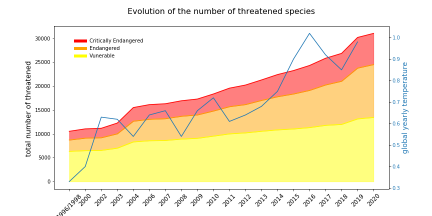

Since the dawn of the Industrial Revolution in the 19th century, the average temperature of the Earth has increased more than 1.0 Celsius. However, in recent years, global warming and climate change have been the subject of a great deal of political controversy, especially in the U.S.. The U.S. president, Donald Trump, has criticized in his twitter that the global warming is "a hoax", "fictional", and even "bullshit".
While the world is overwhelmed with the COVID-19 pandemic, the earth is still warming and many lives are suffering from the heating planet. A recent news reports that Antarctica has hit the highest temperature on record of 18.3C in February 2020. The climate zone for lives now is shrinking.
Is global warming real? What are its causes and consequences? Especially, what are the impacts on lives?
Here we would introduce some domain knowledge.
Here we would introduce some domain knowledge.
Visualization Design:
The top-left figure shows the evolution of urbanization level, annual temperature and forest coverage of countries verses time, i.e. the dots would move in the figure year by year.
In addition to the trend visualization, every dot is Interactive. Clicking a dot(country/region) would draw 3 line chart on the left: temperature, urbanization, forest coverage v.s. time, so that users could directly see the numerical relations between them. As long as time is sufficient, we would implement a fisheye distortion to the scatter plot so that users could have a better view of clustered dots.
Here we would introduce some domain knowledge.
Here will be some words to the general public, like some conclusion
Meet the authors here. The project was created for the Data Visualization course at EPFL.
The logo is inspired by the logo of Zelda: Breath of the Wild. This is a good game but has nothing to do with our project. It's just our team is named Zalda.